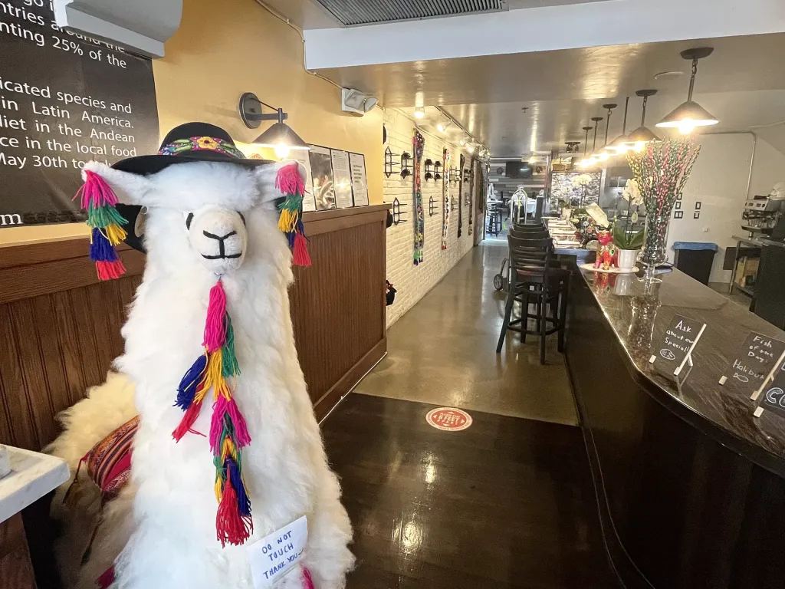

The best food I've had at SLO so far!
Posted on September 19
It's been about a month since I moved into San Luis Obispo, and I'm already in awe of the variety of cuisines that SLO has to offer. The city where I'm from has a few common fast food chains and one incredibly overpriced restautrant that nobody goes to. So SLO feels like a breathe of fresh air! My favorite food spot in SLO has to be COYA. So far, that is! Their chicken chaufa is the best chicken and rice in town! In my view, it has the perfect combination of spiciness and tenderness. The service was incredible, and the entire place had these really cute larger-than-life wool llamas. As a broke college student, I probably won't be going to this place very often, but I will definitely be coming back here on special occasions